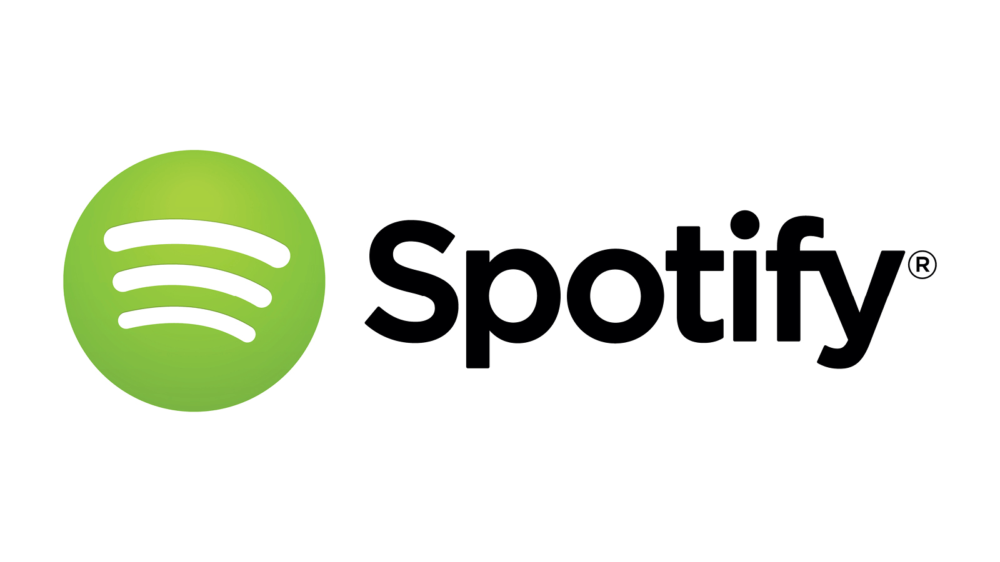

Det är en streaming-tjänst för musik, som finns tillgänglig i en gratisversion med reklam eller en betalversion utan.
Det är huvudsakligen ett program eller app till dator eller annan handmanick, men går också numera att testa som webbspelare.
I dag har Spotify 40 miljoner användare. I Sverige (2014) är Spotify helt dominerande, mer än hälften av alla svenska internetanvändare (58%) lyssnar på musik via Spotify och 38 procent betalar för strömmad musik, enligt undersökningen Svenskarna och internet.
